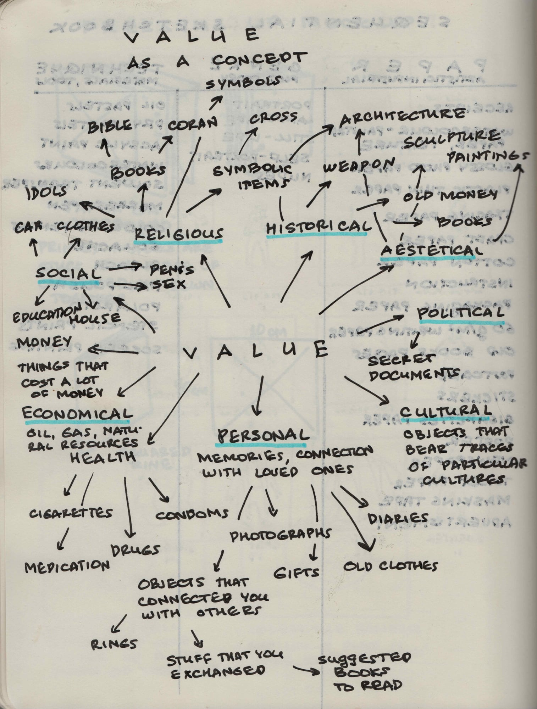
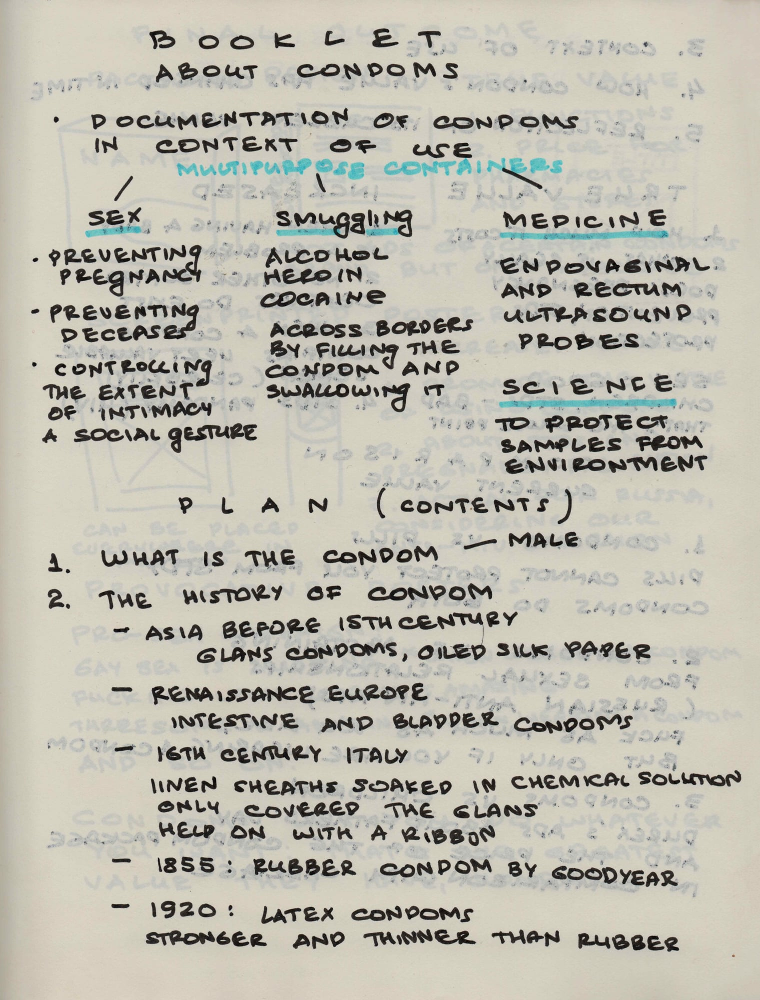
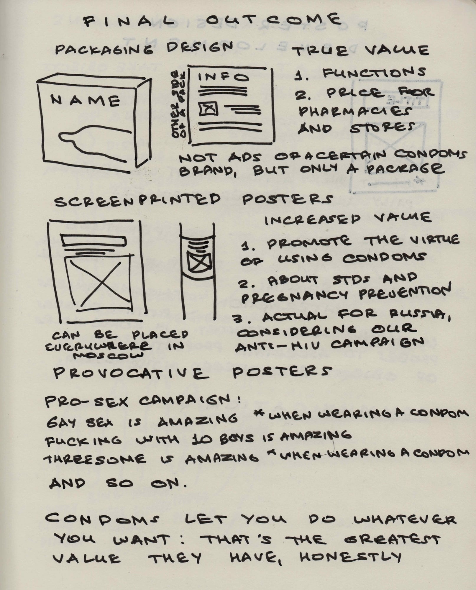
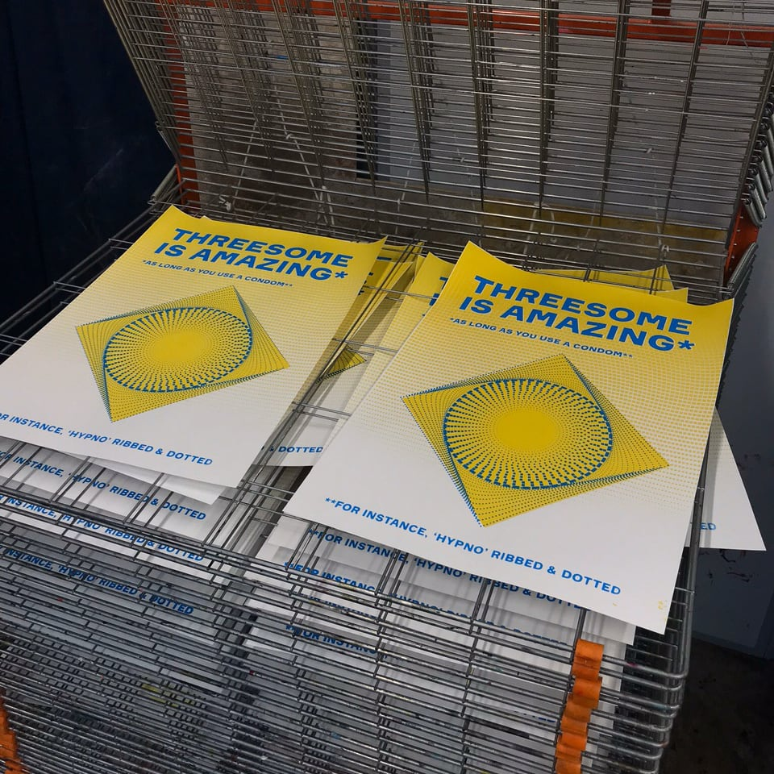
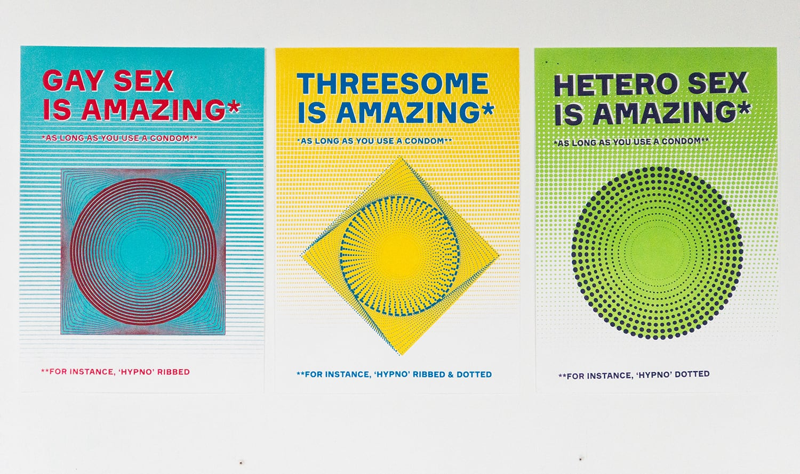
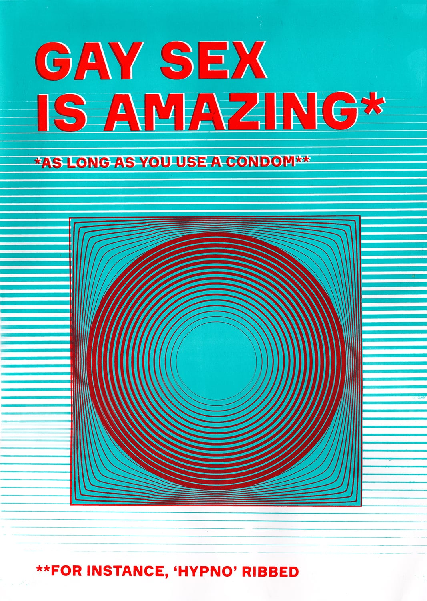

2018
14th October
Starting a new project with pretty vague brief. The task is to choose a physical object and create any outcome (medium and technique of student's choice, depending on topic and purposes) that either increases or decreases its value. The value itself may be referred as religious, personal, historical, political, social, aesthetic, cultural, etc.
This is going to be challenging. The thing I am for sure bad at is making choices. And the more undefined is the task, the more lost I grow.
This is going to be challenging. The thing I am for sure bad at is making choices. And the more undefined is the task, the more lost I grow.
11:03
15th October

A mind-map to investigate possible objects based on values categories.
11:03
16th October
OBJECTS I AM INTERESTED IN (and which I use constantly):
1. Film camera + film — May be too challenging to produce a minimalist outcome due to its technological complexity.
2. Condoms — Provocative, political, personal, feminist, have long history, related to sex (my favourite topic ever!)—seems like a perfect subject to research.
3. Coffee — Too popular and widespread interest to explore.
4. Paint — Colour as a value; ideas from 'Chroma' by Derek Jarmen; the origins of pigments; though it may prove itself too broad.
5. Book — Intriguing as an object, but I may find it hard to base my project on Some book instead of The book.
6. Phone — Don't feel any personal interest to phones as they are way too often researched by artists.
7. Laptop — Same as for a phone—too many people raise the question of phones' value these days.
8. Ceramic cups — I don't see a narrative to investigate here.
9. Pencils and pens — May be interesting in terms of their historical value and technological development.
1. Film camera + film — May be too challenging to produce a minimalist outcome due to its technological complexity.
2. Condoms — Provocative, political, personal, feminist, have long history, related to sex (my favourite topic ever!)—seems like a perfect subject to research.
3. Coffee — Too popular and widespread interest to explore.
4. Paint — Colour as a value; ideas from 'Chroma' by Derek Jarmen; the origins of pigments; though it may prove itself too broad.
5. Book — Intriguing as an object, but I may find it hard to base my project on Some book instead of The book.
6. Phone — Don't feel any personal interest to phones as they are way too often researched by artists.
7. Laptop — Same as for a phone—too many people raise the question of phones' value these days.
8. Ceramic cups — I don't see a narrative to investigate here.
9. Pencils and pens — May be interesting in terms of their historical value and technological development.
11:03
17th October
Why haven't I though of condoms before? This object is perfect in terms of everything, literally. Especially if you are sex-obsessed person (it's me).
11:03
18th October

The first part of the project is devoted to zine making. This booklet should be mostly informative in order to get more acquainted with your chosen subject in terms of its historical context and all possible aspects of value.
Also a few things I haven't added to this plan: I should cover the context of use; how condoms' value has changed in time; and the reflection on its current value.
I should not go too deep into history of condoms, really. I know myself too well to predict that it can become a problem and waste a lot of my time if I don't stop myself from elaborative research in advance. I think have already spent more than I should on researching this topic (whole day!).
11:03
19th October
TRUE VALUE
1. How much a condom costs
2. What it does in fact: pregnancy prevention, STDs protection
INCREASED VALUE
1. When having a baby is a problem
2. No other contraceptives do exist (past times)
3. When a condom contains very valuable semen (celebrity or a beloved person)
TO SUM UP
Sex—good
Unwanted children and STDs—bad
This is the point to focus on: condoms allow you to have fun and receive pleasure without paying a high price of taking risks.
COMPARISON
1. Condoms vs Pills
Pills cannot protect you from STDs. Condoms do both (pregnancy and STDs prevention)
2. Condoms vs Abstaining from sexual relationships (based on Russian anti-HIV ads)
"Fuck as much as you like, but only if you wear a condom"
3. Condoms vs Children
Durex ads devoted to Father's Day (the price of the condoms package in comparison with carriage)
1. How much a condom costs
2. What it does in fact: pregnancy prevention, STDs protection
INCREASED VALUE
1. When having a baby is a problem
2. No other contraceptives do exist (past times)
3. When a condom contains very valuable semen (celebrity or a beloved person)
TO SUM UP
Sex—good
Unwanted children and STDs—bad
This is the point to focus on: condoms allow you to have fun and receive pleasure without paying a high price of taking risks.
COMPARISON
1. Condoms vs Pills
Pills cannot protect you from STDs. Condoms do both (pregnancy and STDs prevention)
2. Condoms vs Abstaining from sexual relationships (based on Russian anti-HIV ads)
"Fuck as much as you like, but only if you wear a condom"
3. Condoms vs Children
Durex ads devoted to Father's Day (the price of the condoms package in comparison with carriage)
11:03
21st October
Made a deal with myself: fuck zine making.
I've missed the crit and now should really concentrate on the making of my main outcome instead of trying to catch up. Considering the fact that we don't have to submit this booklet for the assessment... I really can skip this part. It it too time-consuming. And time is exactly a matter I don't have at all.
I've missed the crit and now should really concentrate on the making of my main outcome instead of trying to catch up. Considering the fact that we don't have to submit this booklet for the assessment... I really can skip this part. It it too time-consuming. And time is exactly a matter I don't have at all.
11:03
23rd October

There are two defined paths I am to choose from.
The first one is package design. Is it going to explore their true value? Not sure. It is more intriguing in terms of my the production issues experience, but at the same time more neutral, less emotionally engaging.
The second path is posters. What I definitely like about them:
1. Feminist and LGBT+ agenda included
2. Exploration of screen-printing as my new possible medium
3. I can use them as my merchandise to sell to instagram followers, as screen-printing allows to produce an edition instead of one object
4. Promotion of safe sex
5. Material outcome, not just a digital image
11:03
The choice was obvious, after all. I am up to design three posters. Let's start from the most widespread sex options that require male condom: gay sex, hetero sex, and threesome.
11:03
24th October
I'm trying to produce poster designs without relying on someone else's work, but it is extremely difficult. I feel like I am just unable to think with my own head. So weird. How do people break free from the limits of standardised scenarios? I can't comprehend the nature of creativity. I really don't understand the sources of novel visual decisions. How do they allow themselves to happen? You just do anything in attempt to prove yourself original? Or are you trying to solve a problem? But why can't you solve it in the simplest possible way? Why do you need to make your outcome more complex than it is required for a viewer to catch the meaning?
I understand the anatomy of a book page and don't understand the anatomy of a poster. Because poster is purely visual, while book is functional.
I have to draw, I guess. Because this fear of building a composition from a scratch literally drives me mad. I am stuck into thinking: I can't do anything, I don't have imagination, I am unable to create anything fascinating. But I need to constantly remind myself that I haven't worked with a poster yet. I am bad at it because I have never practiced it. But my self-esteem is already affected, and I spend half of the day in a deep feeling of despair.
I understand the anatomy of a book page and don't understand the anatomy of a poster. Because poster is purely visual, while book is functional.
I have to draw, I guess. Because this fear of building a composition from a scratch literally drives me mad. I am stuck into thinking: I can't do anything, I don't have imagination, I am unable to create anything fascinating. But I need to constantly remind myself that I haven't worked with a poster yet. I am bad at it because I have never practiced it. But my self-esteem is already affected, and I spend half of the day in a deep feeling of despair.
11:03
28th October
Everything is so uneasy with graphic design. I still don't understand posters, complex structure, heterogenous grid. I look at Arbeits Kollektiv, Groza Design, Esh Gruppa and other studios works, and realise how far I am from a Real Design. But I don't want to stop, as it happened before to my other hobbies, like cinema or animation. I want to invest all my time in professional development, grow bigger than I thought is possible, make something way cooler than my previous projects.
Today I came up with an idea: if I am good at photographic composition and easily discern rhythm and harmony in my visual surrounding. Maybe I should try to build posters based on my photographs?
Today I came up with an idea: if I am good at photographic composition and easily discern rhythm and harmony in my visual surrounding. Maybe I should try to build posters based on my photographs?
11:03
29th October
I found out a possible visual decision.
Condoms usually come in several textures: ribbed, dotted, plain, etc.
Each poster can become a promotional material for a non-existent condom brand that sells differently textured condoms.
For example, 'Gay sex' promotes ribbed condoms, 'Hetero' is for dotted, 'Threesome' is for ribbed+dotted. And here comes the best part of my idea: each poster can be patterned in accordance with texture.
What can be the central image? I'm thinking of a simplified condom symbol — round in a square, transformed with pattern each time to express poster content.
Condoms usually come in several textures: ribbed, dotted, plain, etc.
Each poster can become a promotional material for a non-existent condom brand that sells differently textured condoms.
For example, 'Gay sex' promotes ribbed condoms, 'Hetero' is for dotted, 'Threesome' is for ribbed+dotted. And here comes the best part of my idea: each poster can be patterned in accordance with texture.
What can be the central image? I'm thinking of a simplified condom symbol — round in a square, transformed with pattern each time to express poster content.
11:03
30th October
From now on I'm unstoppable.
(Nat taught me to use blending in Illustrator and saved several days of my life)
(Nat taught me to use blending in Illustrator and saved several days of my life)
11:03
31st October
Everything changes in my life constantly, including these posters' design, but at the point of 31st October 2018 I am completely satisfied with the way I made them. Now screen-printing awaits.
22:51
1st November
An interesting content to print at 2 AM in the only 24 hour printshop of the district. I'm trying to stay cool, but in fact constantly suppress the inner outburst of laughter.
02:21
2nd November

Is there anything better than this feeling when you brought to life an object you have conceived with love and passion? I doubt it.
Is there anything better than this feeling when you brought to life an object you have conceived with love and passion? I doubt it.
02:21
4th November
Took a studio shot to emphasise how proud of myself I am.
Good news: there already are people who want to buy my posters!
Bad news: I still need to print two other designs, and it may take one more week, which I feel like I don't have!
Good news: there already are people who want to buy my posters!
Bad news: I still need to print two other designs, and it may take one more week, which I feel like I don't have!
02:21
9th November

No process photographed, because I was too busy with printing, but yes, in a week I've completed all three posters. Finally. Looking so good when hanged on the wall together.
02:21
2019
10th February

Finally scanned in perfect quality for my Rietveld Academie application!
02:21